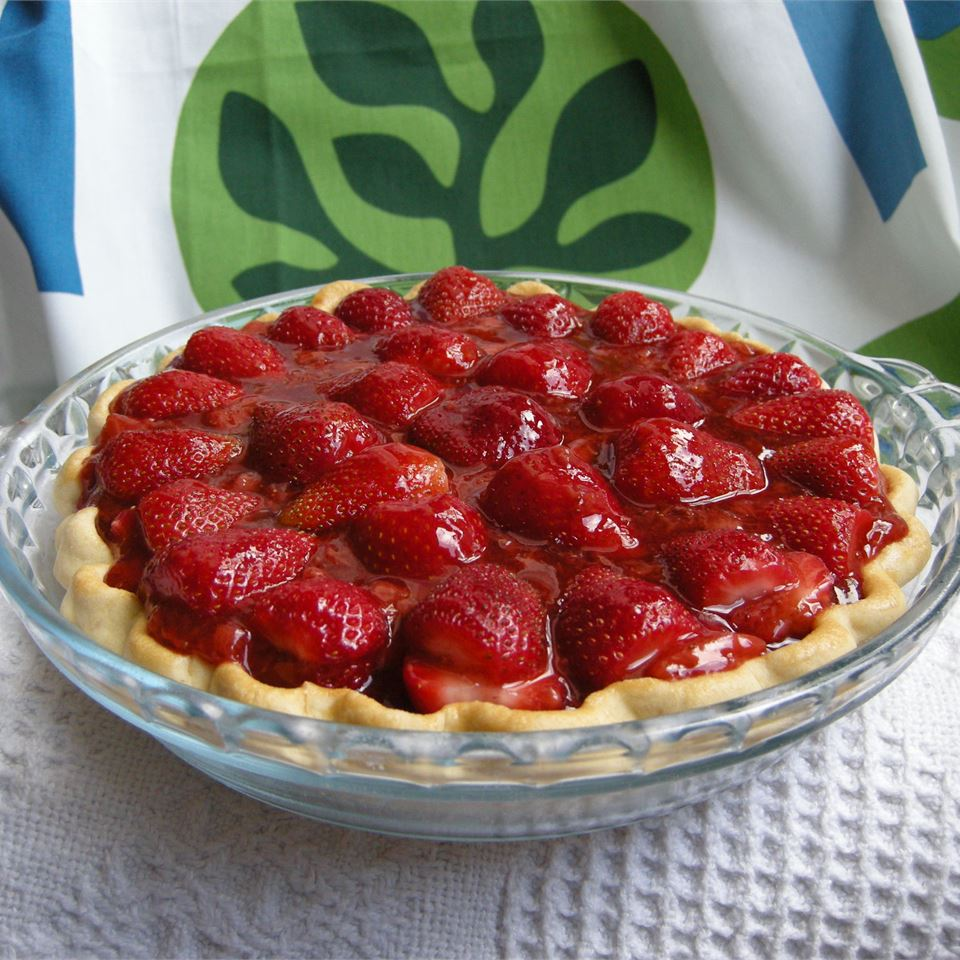

Odin's Strawberry Pie

Description
Strawberry pie mostly consists of strawberries, sugar, a pie crust, and sometimes gelatin. Usually about 70% of the pie by weight is strawberries. It is often served with whipped cream, or sometimes with ice cream.
Properly stored, freshly baked strawberry pie will last for about 2 days at normal room temperature. How long does strawberry pie last in the fridge? Freshly baked strawberry pie will keep well for about 4 to 5 days in the refrigerator; cover loosely with foil or plastic wrap.
Ingredients
- 1 (9 inch) pie crust, baked
- 1 quart fresh strawberries
- 1 cup white sugar
- 3 tablespoons cornstarch
- ¾ cup water
- ½ cup heavy whipping cream
Directions
- Step 1
Arrange half of strawberries in baked pastry shell. Mash remaining berries and combine with sugar in a medium saucepan. Place saucepan over medium heat and bring to a boil, stirring frequently.
- Step 2
In a small bowl, whisk together cornstarch and water. Gradually stir cornstarch mixture into boiling strawberry mixture. Reduce heat and simmer mixture until thickened, about 10 minutes, stirring constantly. Pour mixture over berries in pastry shell.
- Step 3
Chill for several hours before serving. In a small bowl, whip cream until soft peaks form. Serve each slice of pie with a dollop of whipped cream.